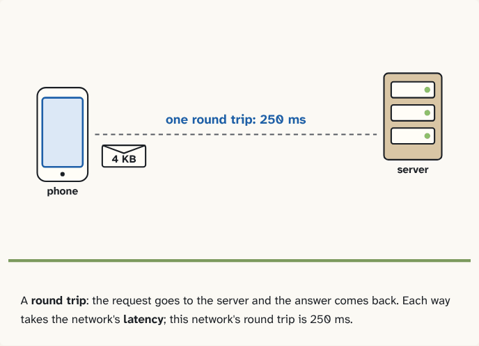

Free courses · 6 puzzles so far · about 30 minutes
Mobile system design, from a packet to an app
What really decides how fast, how frugal and how reliable your app's networking is: round trips, handshakes, the phone's radio, HTTP caching, offline-first data and safe retries. The building blocks every mobile system design interview stands on, one small puzzle at a time.

How it works
Each puzzle starts with a problem a real app hits, gives you one building block, shows it in a diagram that plays itself, and ends with three questions you have to answer to unlock the next one. Facts come from High Performance Browser Networking, Android's documentation, MDN, Stripe and AWS, linked on every page. How these courses are made, and how they're checked →
Modules
Every puzzle opens: start wherever you like. Each one builds on the ones before it; its check tells you you're ready for the next. ✓ marks the ones you've passed (saved only in this browser).
Module 1: The network under your app
Round trips, handshakes, the radio, caching, offline-first data and safe retries. Know this already? Take the check →
- Start here: Round trips, not bandwidth Your profile screen loads in a blink on office Wi-Fi and crawls on the train. The data is 60 KB. Here's what the user is actually waiting for, and why a faster network barely helps.
- One connection, many requests Puzzle 0 counted round trips per request. A brand-new HTTPS connection adds its own before the first request even leaves. Here's what they cost, and how OkHttp makes them a one-time price. Builds on 0.
- The radio is the battery Your app sends a tiny analytics ping every 20 seconds. Each is a few hundred bytes. Users report the app drains their battery. Here's why the size of a request has almost nothing to do with its cost. Builds on 0.
- Ask before you download Your feed downloads the same 200 KB every time the screen opens, even when nothing changed. HTTP already has the answer. Here's how a response says how long it stays good, and how the app asks "has this changed?" for almost nothing. Builds on 0.
- The database is the truth The user opens your notes app in a tunnel: a spinner, then an error. On the next screen, a note they just wrote is missing. Both have one cause. Here's the structure Android recommends instead: one place every screen reads from.
- Retry without charging twice The user taps Pay. The request times out. Did the payment go through? Retrying might charge them twice; not retrying might lose the order. Here's how a key makes retries safe, and how to retry without flooding a struggling server.
Module 2: Designing a feature end to end (next)
A feed with pagination and cursors; images and their cache; sync with conflicts; real-time updates (polling, long polling, WebSockets, push); rolling out safely with flags.
Module 3: Seeing it in production (later)
Metrics that matter, crash and ANR rates, network error budgets, logs you can search, and why p99 matters more than the average.
Take it with you
Continue with Claude
Copies a prompt that turns Claude into your tutor for this course: what you've passed, the words you know, the questions you slipped on, and how to teach you, one small block at a time. Paste it into Claude, or any AI assistant. Built in your browser from your progress; nothing is sent anywhere.
Download for Obsidian
The whole course as an Obsidian vault: a note per puzzle linked to the puzzles it builds on (open the graph view to see the building blocks), a glossary, and every question as a flashcard for the Spaced Repetition plugin.